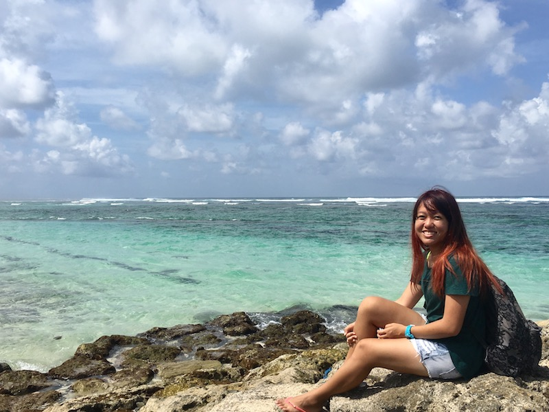

|  | Sherlyn LIMHonours Student (Alumna)
Email: a0130833(AT)u.nus.edu |
Honours Project
My project aims to better understand the symbiotic relationship between giant clams and their symbionts. Giant clams host a group of dinoflagellates, Symbiodinium, in their mantle, which play an important role in the growth and survival of giant clams under different environments. However, little is known about this relationship. My project uses molecular techniques to examine the diversity of Symbiodinium in giant clams, and investigates the relationships between the Symbiodinium types, giant clams species, and the environment they inhabit. This would help to better understand the ecological characteristics of giant clams, and hopefully this information will be useful in future conservation work.
Background
I am an undergraduate student of the Bachelor of Environmental Studies (BES) programme, with a general interest in nature and ecology. I am particularly fascinated by the diversity of marine life, and wish to do something related to marine biology and conservation.